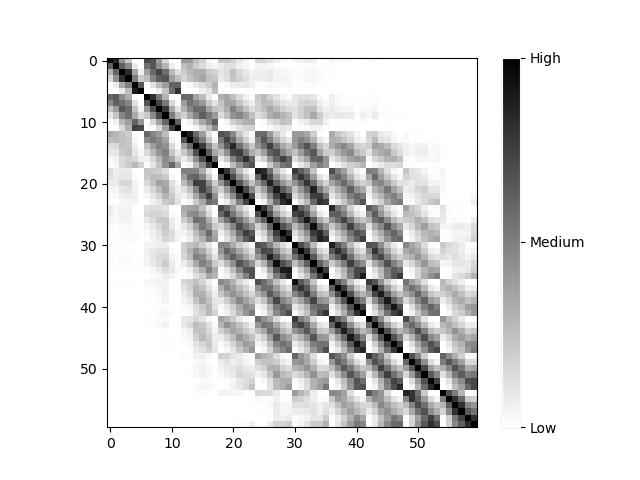

Hao, Zhan; YiFei YU; YiWei Xu
|  | ||
| SKFX |
||
If you want to get the sample, CLICK ME!
| Algorithm Name | Feature Descriptor | Dimension | Similarity |
| VGG-16 | The feature vector output from the last max-pooling layer | 512*7*7 | Euclidean Distance |
| ResNet-18 | The feature vector output from the average pooling layer | 512 | Euclidean Distance |
| Random k-d Forest | 1000 Key Points with their Descriptors | 128*1000 | Similarity Formula |
| SuperGlue | 1024 Key Points with their Descriptors | 256*1024 | GNN |
| ... | ... | ... | ... |
| Average Precision | |||||||
| Top-N | Top-5 | Top-10 | Top-20 | Top-30 | Top-40 | Top-50 | Top-100 |
| VGG-16 | 0.334 | 0.265 | 0.190 | 0.154 | 0.140 | 0.130 | 0.101 |
| ResNet-18 | 0.780 | 0.658 | 0.552 | 0.497 | 0.469 | 0.457 | 0.430 |
| Random k-d Forest |
0.861 | 0.766 | 0.652 | 0.577 | 0.540 | 0.513 | 0.457 |
| SuperGlue | 0.907 | 0.828 | 0.736 | 0.691 | 0.661 | 0.648 | 0.630 |
| ... | ... | ... | ... | ... | ... | ... | ... |
| Average Recall | |||||||
| Top-N | Top-5 | Top-10 | Top-20 | Top-30 | Top-40 | Top-50 | Top-100 |
| VGG-16 | 0.026 | 0.037 | 0.047 | 0.051 | 0.057 | 0.060 | 0.067 |
| ResNet-18 | 0.126 | 0.157 | 0.232 | 0.261 | 0.279 | 0.292 | 0.334 |
| Random k-d Forest |
0.146 | 0.221 | 0.294 | 0.321 | 0.338 | 0.347 | 0.375 |
| SuperGlue | 0.163 | 0.255 | 0.356 | 0.405 | 0.433 | 0.451 | 0.511 |
| ... | ... | ... | ... | ... | ... | ... | ... |